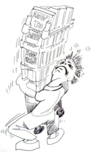
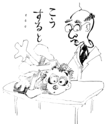

This page has usage examples for the following words:

acupuncture 針治療 はりちりょう
back pain 腰痛 ようつう
cupuncture therapy 針療法 はりりょうほう
electrotherapy 電気治療、電気療法
でんきちりょう、でんきりょうほう
lower back pain 下部腰痛 かぶようつう
medical device, medical equipment 医療器具 いりょうきぐ
multi-disciplinary approach
グループで治療（ちりょう）にあたるアプローチ
neurosurgeon 神経外科医 しんけいげかい
occupational therapist 作業療法士 さぎょうりょうほうし
orthopedic surgeon 整形外科医 せいけいげかい
pain relief 鎮痛 ちんつう
physical therapist 理学療法士 りがくりょうほうし
psychologist 心理学者 しんりがくしゃ
sciatica 坐骨神経痛 ざこつしんけいつう
surgeon 外科医 げかい
I have suffered from back pain for many years.
長年、腰痛に悩まされています。
ながねん、ようつうに なやまされています。
When I am tense for a while, my back and hip start to hurt.
緊張感が続くと、背中や腰が痛くなってきます。
きんちょうかんがつづくと、せなかやこしがいたくなってきます。
The symptoms are sometimes mild, but then become painful. They are reoccuring.
症状が軽くなったり、またしばらくすると痛みが出る、ということを繰り返しています。
しょうじょうがかるくなったり、またしばらくするといたみがでる、ということをくりかえしています。
I try to treat back pain at home with my own therapeutic equipment.
家の中で、健康器具を使って自己流で治すようにしていますが・・・
いえのなかで、けんこうきぐをつかって じこりゅうでなおすようにしていますが・・・
My job requires me to hold the same posture for long hours. I think that is what is causing the back problems.
職業上、同じ姿勢を長時間続けるので、腰に負担がかかるのだと思います。
しょくぎょうじょう、おなじしせいをちょうじかんつづけるので、こしにふたんがかかるのだとおもいます。
A conversation between a patient and a doctor about the back pain
Patient:
I have suffered from back pain for a long time. I hear that the treatment of back pain has made quite a lot of progress and various medical devices are now available. What are some of the recent treatments for back pain?
腰痛に長いこと悩まされています。腰痛の治療法にかなりの進歩があるということですね。また、いろいろな医療器具が出まわっているそうですが、最近の治療法について説明して下さい。
Doctor:
Among musculoskeletal diseases, back pain is the most common complaint that requires treatment. Of all diseases, back pain is the fifth most common reason to visit a doctor. Over half of the general population is said to visit the doctor for back pain at some point in their lives. Various medical devices enable patients to be treated at special facilities or at home. As each device has merits and demerits, it is best to consult specialists or therapists. The latest method of treatment is called multi-disciplinary approach, in which specialists in each field get together and form a group for treatment. The group consists of surgeon, orthopedic surgeon, neurosurgeon, physical therapist, occupational therapist and psychologist. The approach is based on the finding that back pain is strongly affected by stress.
腰痛は、筋骨格疾患のうちで最も高率に治療を要し、全疾患中の頻度では第５位に挙げられます。全人口の半数は、生涯のうち一度は、腰痛のために医師の診察を受けるとされています。各種の医療器具が出まわって、専門の施設において、あるいは家庭にいて治療が出来るようになりました。それぞれ一長一短がありますが、ご自分に最適かどうかは専門医や治療師にご相談なさるとよいでしょう。治療法のうち、最新のアプローチといわれているのは、各分野の専門家がグループを構成して、治療にあたる方法です。グループは、外科医、整形外科医、神経外科医や理学療法士、作業療法士に加えて心理学者等からなります。ストレスが腰痛に強い影響を与えていることが明らかになったからです。

My two cents 一言おせっかい
Be sure to bend your knees when lifting something regardless of its weight.
重い物ばかりでなく、軽いと思われる物でも、持ち上げる時には、必ず膝を折ることを忘れないように。
[yo01]
| © 1995-2013 NACOS International Institute. All Rights Reserved. |